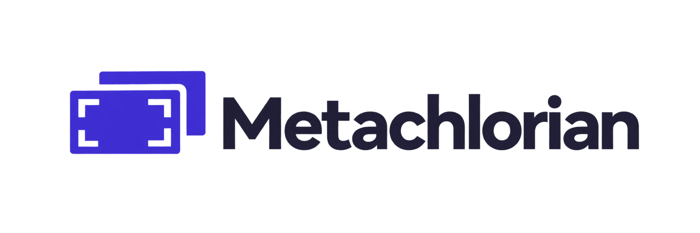

Family foundations · version 1.0.0 · proposed application adoption
Precise frames.
Expressive footage. Quiet tools.
The website introduces the workflow. Metachlorian understands and retrieves shots. Cutawan creates the edit. Their shared foundations support these different jobs.
Identity and foundation colours
Marketing
Find the shot you remember.
Editorial type, generous spacing, violet actions. Footage remains the visual focus.
Try the sample libraryDiscover and understand.
Wide coastal shots, golden hour00:00:08:12 → 00:00:20:22✓ Recorded as clearedReview handoff patternShape the edit.
Source range · preview → trim → exportTranscript and caption controls
keep authored styling separate.
Preserve what serves the work.
The library's existing Key accent and the editor's existing warm-white controls remain functional profile choices. Cutawan does not currently gain a light theme from this foundation. The toggle changes only the library example.
This page illustrates component contracts; it does not connect to either application. Read the system specification. The approved SVG embeds the original PNG unchanged; it is not an editable vector trace.